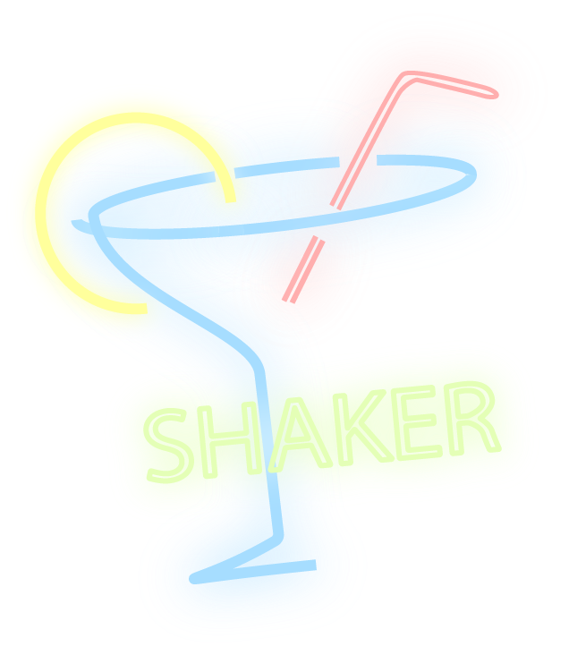

typography
Header Level 1
Header Level 2
Header Level 3
Header Level 4
The styleguide is a resource for designers, product managers, and developers, providing a common language paterns. Use it to maintain modular front-end code and visual consistency across the web app. Learn about why and how we made the styleguide over on the Engineering Blog.
color
interactive elements
in-line text
This is a UX/UI porfolio for Johnny Yenavigation link
buttons
Button Button2text input
image with link

profile content
bio
Third Year Undergraduate at School of Interactive Art and Technology, concentrating studies on Design and Interactive System. Familiar with UX/UI design principles, and fluent in Adobe Design Suite. Have experience with operation and advertising while working in Wine, Beer, and Spirit industry.
process analysis 1 | Interaction Design

In an interaction design course, I worked with a team of three to design a new feature for a transit application called Citymapper. The first stage of this project includes user research and ethnography research where I conducted a face-to-face interview with a novice user to understand and observe how users interact with the application.
With all three research from our team, we claimed that having a weather alert feature within a transit application can help users to have a more safe and prepared experience while exploring cities through transits.
The design team then split up as one content designer and two UI designers. Me, as one of the UI designer, was in charge of designing weather forecasting feater that users can toggle on and off. The design process included using Adobe XD for medium fidelity wireframing and prototyping and using Adobe Illustrator to create high fidelity mockups for presentations.
process analysis 2 | Android Studio

Shaker, is an individual project in a Mobile Computing course, that serves as a cocktail recipe application that allows users to upload their homemade recipes to the platform and easily browse their recipe database and external recipes.
The project has two main phases, one being the computing side which includes using SQLite database, Preferences, and Intents to come up with an interactive system that allows a user to store their recipes into SQLite database with names, bases, and images. The sensor is also implemented within the application to strive for an interesting interaction where users can simply input a type of drink and search for recipes through shaking their devices, mimicking the idea of a cocktail shaker.
I also implemented Recycler View, Fragments, Navigation Drawer, and Swipe Gallery to design UX interaction where users can easily navigate through different activities.